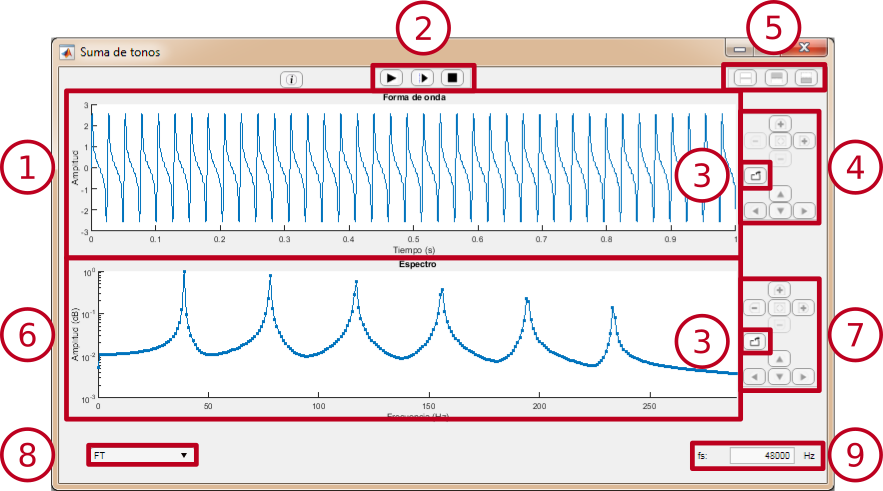
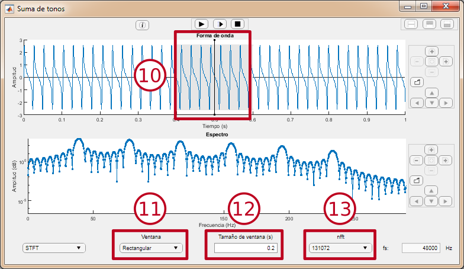
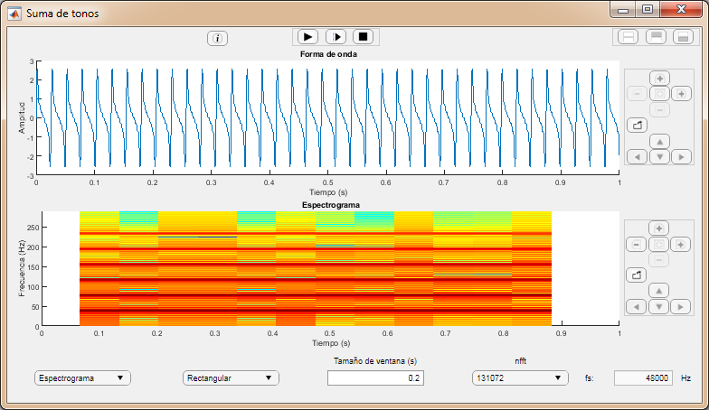
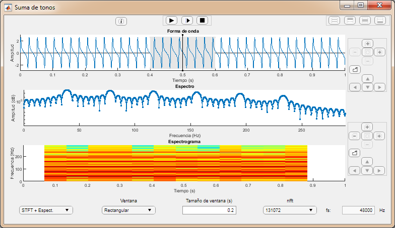

Ventana de visualización
Esta ventana permite analizar el espectro de la señal elegida mediante diferentes métodos: Transformada de Fourier, Transformada de Fourier a Corto Plazo y espectrograma.
Interfaz
Transformada de Fourier

Permite observar la Transformada de Fourier de la señal de audio.
-
Vista de la señal: Muestra la señal de audio cargada en la ventana de visualización.
-
Botones de reproducción: Permiten controlar la reproducción de la señal de audio.
- El botón de la derecha inicia la reproducción desde el comienzo de la señal.
- El botón del centro inicia la reproducción a partir del cursor colocado haciendo clic sobre la señal.
-
El botón de la izquierda detiene la reproducción.
-
Botón de exportación: Permite exportar la señal o el experto a un fichero .csv o .xls. La señal puede ser guardada como un fichero de sonido .wav.
-
Panel de navegación de la señal

- Sirven para ampliar y reducir la vista en el eje vertical.
- Sirven para ampliar y reducir la vista en el eje horizontal.
- Restaura la vista original.
- Sirven para desplazarse por la vista.
-
Cambiar vista: Estos botones permiten agrandar uno de los gráficos.
-
Vista de la información espectral: Aquí se puede observar la información espectral de la señal, obtenida mediante el método seleccionado.
-
Panel de navegación de la información espectral: Sirve para navegar por la vista de la información espectral. Funciona de la misma forma que el panel de navegación de la señal.
-
Selección del modo: Permite seleccionar el método con el que se obtiene la información espectral de la señal.
-
Frecuencia de muestreo: Muestra la frecuencia de muestreo de la señal cargada.
Botón derecho: Cuando haces clic sobre uno de los gráficos aparece un menú. Con el se puede:
-
Exportar el gráfico como una imagen.
-
Cambiar la escala del eje de amplitud entre lineal y logarítmica.
STFT
Permite observar la Transformada de Fourier a Corto Plazo (STFT) de la señal de audio.

-
Ventana: Ventana utilizada para calcular la STFT. Se puede cambiar su posición haciendo clic sobre la señal.
-
Selector de forma de ventana
-
Selector de tamaño de ventana: Permite introducir el tamaño de la ventana en segundos (entre 0.001 y 1).
-
Selector de nfft: Permite seleccionar el número de puntos de la transformada entre las opciones disponibles.
Espectograma
Permite ver el espectrograma de la señal.

STFT + Espectrograma
Permite observar la STFT de la señal y ver su posición en el espectrograma.

La Transformada de Fourier es una transformación matemática utilizada para transformar señales en el dominio del tiempo (en este caso, la señal de audio) al dominio de la frecuencia. El resultado muestra el contenido frecuencial de la señal. En resumen, es una aproximación a descomponer una señal en una suma de varios tonos puros de diferente frecuencia.

Siendo f(t) una señal en el dominio del tiempo y siendo ω = 2𝜋f. F(ω) es la Transformada de Fourier obtenida.
En este caso, la señal de audio no es una señal contínua, sino que es una señal discreta, es decir, representada por un conjunto de muestras. Así que, realmente, se está realizando una Transformada Discreta de Fourier, que matemáticamente se define así:

Siendo x[n] la señal de audio, con N muestras, y ω = 2𝜋f. X(ω) es la Transformada Discreta de Fourier obtenida.
Transformada de Fourier a Corto Plazo (STFT)
Consiste en realizar la Transformada Discreta de Fourier sobre un segmento de la señal, en lugar de sobre la señal completa. Este segmento de la señal se obtiene multiplicando la señal original por una ventana. De esta forma, sólo se tendrán en cuenta las muestras de la señal que queden dentro de la ventana. Los valores de estas muestras se verán modificados por la forma de la ventana (excepto en el caso de la ventana rectangular).

|

|
| Ventana rectangular aplicada a una señal
|

|

|
| Ventana Hanning aplicada a una señal
|
Espectrograma
Representación que permite ver el desarrollo frecuencial de la señal de audio a lo largo del tiempo. En el eje horizontal se corresponde con el eje temporal, el eje vertical con el frecuencial, y la variación de la densidad espectral de potencia se representa mediante un degradado de color.
El espectrograma se calcula realizando varios STFTs consecutivos, haciendo un barrido con la ventana elegida.